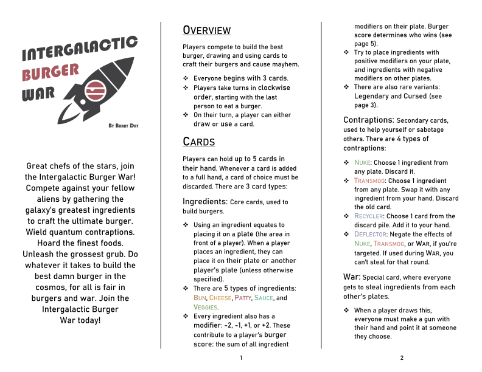
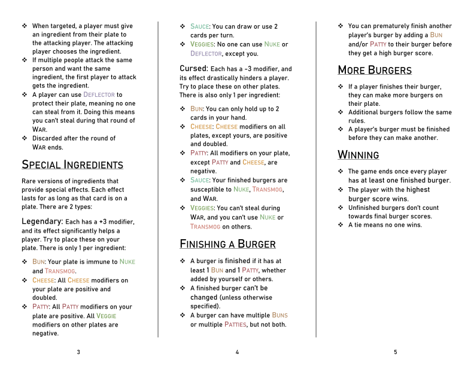

Intergalactic Burger War
2019
Build burgers, wage war! Intergalactic Burger War is a fast-n-wacky card game where players compete to build the best damn burger in the Cosmos. Gather the galaxy's greatest ingredients while sabotaging your fellow extraterrestrial players–all is fair in burgers and war.
Genre: Card Game (3-8 players)
Team Size: Sole Creator
Tools Used: Adobe Illustrator
Status: Released
Roles and Responsibilities
Design
- Made the entire game in 10 weeks, traversing the full development pipeline from paper prototype to final showcase
- Approached the design process from a systems perspective, crafting and fine-tuning a small core of mechanics to produce emergent, chaotic gameplay
- Regularly play-tested, utilizing players’ feedback to shape each design iteration
Art
- Combined vintage style with modern UI/UX principles to pack gameplay mechanics into a concise, 1950’s B-movie-inspired card layout
- Designed all cards in Adobe Illustrator, acquiring competence with it
- Crafted a rules document that communicates complexity without sacrificing brevity

